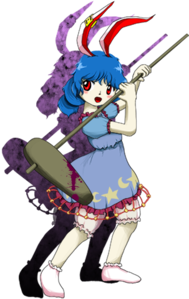

- Welcome to Touhou Wiki!
- Please register to edit. For assistance, check in with our Discord server or IRC channel.
Seiran
Seiran se̞ːɾ̠ã̠ɴ | |
|---|---|
|
 Seiran in Legacy of Lunatic Kingdom The Pale Blue Eagle RaviMore Character Titles | |
| Species | |
| Abilities |
Firing bullets from other dimensions |
| Occupation |
Deserted Lunarian military infiltrator, now Dango Salesgirl |
| Location |
Gensokyo |
Music Themes | |
| |
Appearances | |
| Official Games | |
| |
| Print Works | |
| |
Seiran (清蘭 Seiran) is a moon rabbit who appears as the stage 1 boss in Legacy of Lunatic Kingdom.
General Information[edit]
Seiran is a member of the "Eagle Ravi" Earth Recon Unit sent to "purify" the Earth, and is part of the Lunarian Military Infiltrators. She's in charge of the Infiltration operations, one of the most dangerous jobs. It seems that it's hard for her to hold a regular conversation, even with her Moon Rabbit comrades.
Background Information[edit]
Name[edit]
Seiran (清蘭) is spelled with the characters for sei (清) "clear, pure, clean", and ran (蘭) "orchid" a plant of the orchid family, bearing unusually-shaped flowers of beautiful colours; it could also means "elegant, graceful". Seiran is also the name for a Japanese attack floatplane used during World War 2, the Aichi M6A1.
Design[edit]
Seiran has dark blue hair, tied in two bushy ponytails, with ears similar to Reisen Udongein Inaba's on the top of her head and an accessory in one of them, she has red eyes, a common trait in Moon Rabbits. Her dress is periwinkle with frills and an alternating star and crescent moon pattern across the bottom. The bloomers under her skirt seem to be made of see-through fabric. She also carries a purple stained wooden mallet (presumably used for making Mochi). Although it's not visible in her portraits, she also has a tail.[1]
Story[edit]
| Attention: This section is a stub and it needs expanding with more information related to the section's topic. If you can add to it in any way, please do so. |
- Legacy of Lunatic Kingdom
Relationships[edit]
- Ringo
Along with Ringo both are members of the "Eagle Ravi" Earth Recon Unit sent to "purify" the Earth.
- Reisen Udongein Inaba
She seem to have known Reisen before she fled to Gensokyo as both were part of the Lunarian Military.
Spell Cards[edit]
| Name | Translated | Comments | Games | Stage | ||
|---|---|---|---|---|---|---|
| Total: 6 | ||||||
| 凶弾「スピードストライク」 | Evil Bullet "Speed Strike" | LoLK | St. 1: H/L | |||
| 弾符「イーグルシューティング」 | Bullet Sign "Eagle Shooting" | LoLK VD |
St. 1: E/N/H Monday - 1 | |||
| 弾符「鷹は擊ち抜いた」 | Bullet Sign "The Eagle Shot Its Target" | LoLK | St. 1: L | |||
| 銃符「ルナティックガン」 | Gun Sign "Lunatic Gun" | LoLK | St. 1: E/N/H/L | |||
| 弾符「ラビットファルコナー」 | Bullet Sign "Rabbit Falconer" | VD | Monday - 3 | |||
| 夢弾「ルナティックドリームショット」 | Dream Bullet "Lunatic Dream Shot" | VD | Wrong Sunday - 2 | |||
Additional Information[edit]
- She is the first Stage 1 Boss that has a proper Defeated Portrait.
- Seiran appears on the demo CD cover of Legacy of Lunatic Kingdom.
- Seiran is one of the two characters in the whole series who appears 3 times in a single stage: twice as a midboss and the third as the actual boss of stage 1 in Legacy of Lunatic Kingdom. The other is Alice Margatroid in Perfect Cherry Blossom.
- Seiran (晴嵐) is also a nickname for the Aichi M6A, a WWII-era Japanese war plane. However, this name connection has been stated to be irrelevant by ZUN in Strange Creators of Outer World.
- Seiran (晴嵐) means Mountain Vapor, which was Reisen's weather in Scarlet Weather Rhapsody.
Fandom[edit]
Official Profiles[edit]
| ○１面ボス 浅葱色のイーグルラヴィ 清蘭（セイラン） 種族：月の兎 文字通り鉄砲玉。 月の兎はみんなテレパシー能力を持っているが、 |
Stage 1 Boss: The Pale Blue Eagle Ravi Seiran Species: Moon rabbit An underling treated with about as much respect as a cannonball.[2] All the moon rabbits have to ability to communicate via telepathy, |
| ○１面ボス 浅葱色のイーグルラヴィ 清蘭（セイラン） 種族：月の兎 文字通り鉄砲玉。 月の兎はみんなテレパシー能力を持っているが、 延々と調査を行っていたが、一向に月の民からのゴーサインが出ない。 |
Stage 1 Boss: The Pale Blue Eagle Ravi Seiran Species: Moon rabbit An underling treated with about as much respect as a cannonball.[2] All the moon rabbits have to ability to communicate via telepathy, She's been doing a lot of investigation, but still hasn't received an OK from the People of the Moon. |
Official Sources[edit]
- 2015/05/10 Legacy of Lunatic Kingdom trial - omake.txt (trial profile, stage 1 dialogue)
References[edit]
- ↑ Legacy of Lunatic Kingdom - Seiran's theme - ZUN: You can't see it, but she does have a tail.
- ↑ 2.0 2.1 The term used here, teppoudama (鉄砲玉, lit. "cannonball"), is Yakuza slang for a low-ranking gang member who isn't expected to make it out of their assignment alive. Also used as slang for fictional characters who exist just to get beaten up by the hero before stronger enemies appear.
| This page is part of Project Characters, a Touhou Wiki project that aims to write proper descriptions for all official characters of Touhou Project. Please keep the character page guidelines in mind when contributing. |